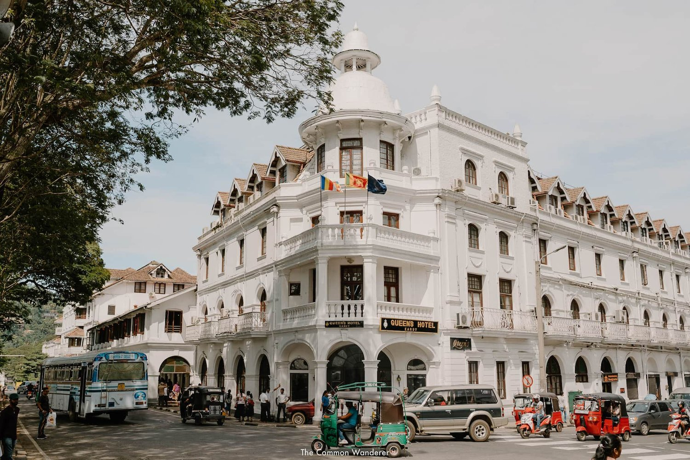

21th December 2022

One of Sri Lanka’s iconic historic hotels, Queen’s Hotel, situated in the heart of Kandy,
faces the beautiful splendid surroundings alongside the Kandy Lake.
Many travellers come to Sri Lanka for the white-sand beaches and epic surf; but right at the island’s mountainous emerald-swathed heart lies a spiritual, charming area full of tea
plantations, misty hills, and those famous blue train carriages.
The gateway to all of this hill-country action (and the greatest train journey in the world!) is Kandy; City of Kings, Sri
Lanka’s second city and the island’s undisputed historical and cultural capital. Protected by its geographic position
and less-accessible terrain, the powerful ancient Kingdom of
Kandy was able to hold off the advancement of both the Portuguese and Dutch colonisers through the 1500s and 1600s, becoming the last standing bastion of independent
Ceylon.
In doing so, the city was able to preserve the unique customs, culture, and arts that had been heavily subdued elsewhere in the country - until 1815 when it finally
succumbed to British rule. Today, that cultural preservation
lives on in the city’s many significant cultural and historic sites, forming the basis for all the very best places to visit in Kandy. The best-known of these is the Temple of the Tooth
relic; Buddhism’s most important religious shrine, and said
to be the location of a portion of Buddha’s tooth. But Kandy is also so much more than its number one attraction; it's a
city of delightful chaos, with its bustling streets, ancient temples, colonial architecture, aristocratic gardens and
the glorious Kandy lake forming the backdrop to a perfect few days
amongst Sri Lanka's lush green hills. There are so many great things to see and do in Kandy,
and we highly recommend spending a few days in the city to take it all in.
LOVE OUR PHOTOS? Edit like us with our Tropical Dreams Preset Packs, and Tropical Bliss mobile video filters,
inspired by the tropical beauty and colour of this beautiful country
The Best Things to do in Kandy, Sri Lanka
Author: Hege Refsnes
hege@example.com